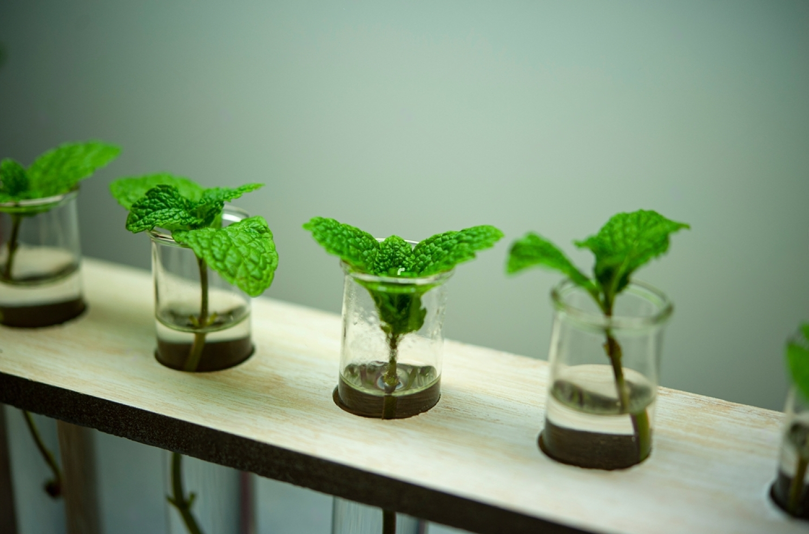

About Mint
Mint is a perennial herb with very fragrant, toothed leaves and tiny purple, pink, or white flowers. There are many varieties of mint—all fragrant, whether shiny or fuzzy, smooth or crinkled, bright green or variegated. However, you can always tell a member of the mint family by its square stem. Rolling it between your fingers, you’ll notice a pungent scent and think of candy, sweet teas, or maybe even mint juleps.
As well as kitchen companions, mints are used as garden accents, ground covers, air fresheners, and herbal medicines. They’re as beautiful as they are functional, and they’re foolproof to grow, thriving in sun and shade all over North America. Since mint can be vigorous spreaders, you simply have to be careful where you plant it.
harvesting
- Frequent harvesting is the key to keeping mint plants at their best. Young leaves have more flavor than old ones, and mint can be harvested as soon as it comes up in spring. Although fresh is best and sprigs keep for a few days in water, mint leaves can be frozen or air-dried in bunches.
- Right before flowering, cut the stems 1 inch from the ground. You can harvest one mint plant two or three times in one growing season.
- You can also just pick the leaves as you need them.
- You can grow the plants indoors for fresh leaves throughout the winter. If you want to dry them, it’s best to cut the leaves right before flowering. Store the dried leaves in an airtight container.
Propagating Mint
The best way to propagate mints is by taking cuttings from those that you like best. It’s easy—take 6-inch cuttings of rooted stems and plant them horizontally in the soil. Mint stems will also root in a glass of water. Start with a small cutting from an established plant. Any gardening friend will give you a cutting of a favorite mint.
